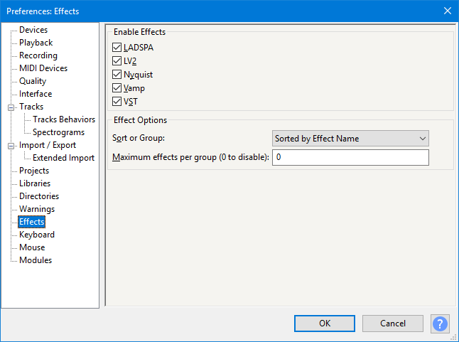

Effects Preferences
- Accessed by: (on a Mac )
- 
- Effects Preferences.
- Click on any other Preferences sections in the above image to read about those Preferences.
Enable Effects
All types of effect as below are enabled by default according to your operating system, but individual effects of any type that you add yourself must be enabled in Plug-in Manager before they will appear in the Audacity menus.
Removing the checkmark from one or more boxes then pressing will immediately remove all effects of that type from the Audacity menus.
The links in the list below provide installation instructions for each type of effect.
- LADSPA: Enable LADSPA effects.
- LV2: Enable LV2 effects.
- Nyquist: Enable Nyquist effects.
- VAMP: Enable VAMP analysis effects.
- VST: Enable VST effects.
- Audio Unit: Enable Audio Unit effects (Mac only).
Effect Options
These options let you sort or group effects that appear in the Generate, Effect or Analyze menus by effect name, type of effect or publisher. The "Grouped" options place effects into submenus within each group, so substantially shorten the menu. All the options place built-in effects above plug-in effects.
- Effects in menus are:
- Sorted by Effect Name: Effects are listed in one long menu sorted by effect name, built-in effects above the divider then plug-ins below the divider.
- Sorted by Publisher and Effect Name: Effects are listed in one long menu, built-in effects sorted by name above the divider then plug-ins sorted by publisher then name below the divider.
- Sorted by Type and Effect Name: Effects are listed in one long menu, built-in effects sorted by name above the divider then plug-ins sorted by type then name below the divider.
- Grouped by Publisher: Effects are grouped by effect publisher, with effects in each group in a sub-menu. The "Audacity" group for built-in effects is above the divider and groups for plug-ins are below the divider.
- Grouped by Type: Effects are grouped by effect type, with effects in each group in a sub-menu. The "Audacity" group for built-in effects is above the divider and groups for plug-ins are below the divider.
- Maximum effects per group (0 to disable): If enabled by setting a non-zero value, this controls for the "Sorted" options the maximum number of plug-ins allowed in the main menu before they are grouped into sub-menus. For the "Grouped" options this controls the maximum number of plug-ins allowed in a sub-menu before being grouped into a secondary sub-menu. Each Group is named according to the number of plug-ins it contains in numerical order. For example, if there were 10 plug-ins and the value was set to "5", there would be two groups "Plug-ins 1 to 5" and "Plug-ins 6 to 10".
Plug-ins of the same name may be grouped into a sub-menu even when a "Grouped" option is not chosen. This can occur:
- If you have the same plug-in in different locations that are searched by Audacity
- If there are separate mono or stereo versions of a plug-in that are given the same internal name.